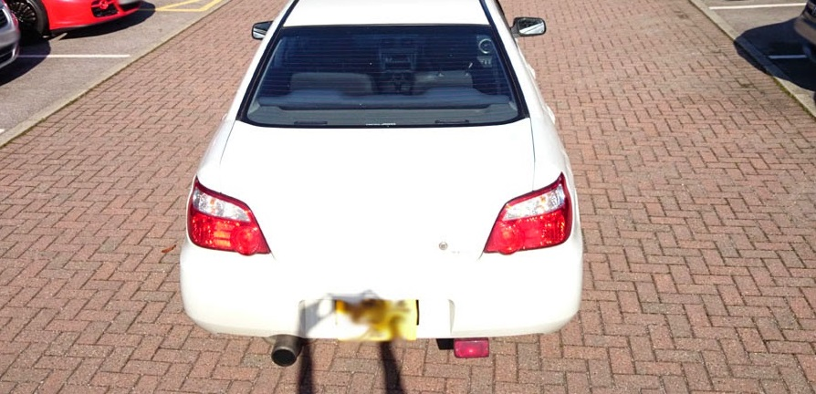
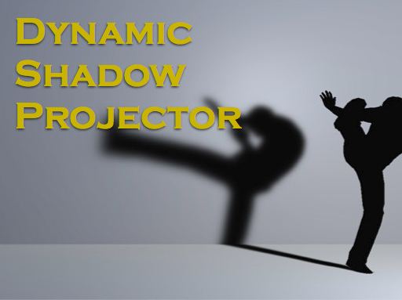
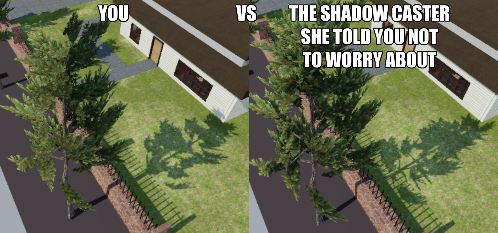

<!DOCTYPE html>
<html lang="en">

<head>

    <meta charset="utf-8">
    <meta http-equiv="X-UA-Compatible" content="IE=edge">
    <meta name="viewport" content="width=device-width, initial-scale=1">
    <meta name="google-site-verification" content="9UCBtBRg7D0bgeyjFWmZPQQVYCOc6FDR-5rm6oLICt0" />

    <!-- for Google -->
    <meta name="description" content="Cast No Shadow" />
    <meta name="keywords" content="Unity3D, Shadows, Performance, Shadow Proxy, Shader" />

    <meta name="author" content="Vatsal Ambastha" />
    <meta name="copyright" content="Vatsal Ambastha" />

    <!-- for Facebook -->
    <meta property="og:type" content="article" />
    <meta property="og:url" content="http://www.vatsalambastha.com/blog/shadow-proxy/page.html" />

    <meta property="og:title" content="Cast No Shadow" />
    <meta property="og:description" content="Shadows may be killing your game. Here's one way to fix it." />
    <meta property="og:image" content="http://www.vatsalambastha.com/blog/shadow-proxy/img/header-bg.jpg" />
    
    <meta property="og:site_name" content="VatsalAmbastha.com"/>
    <meta property="article:publisher" content="https://www.facebook.com/vatsalAmbastha" />
    <meta property="article:author" content="https://www.facebook.com/vatsalAmbastha" />

    <!-- for Twitter -->          
    <meta name="twitter:card" content="summary" />

    <meta name="twitter:title" content="Cast No Shadow" />
    <meta name="twitter:description" content="Shadows may be killing your game. Here's one way to fix it" />
    <meta name="twitter:image" content="http://www.vatsalambastha.com/blog/shadow-proxy/img/header-bg.jpg" />

    <link rel="shortcut icon" href="../../img/ico.png" type="image/png">

    <!-- Bootstrap Core CSS -->
    <link href="../../css/bootstrap.min.css" rel="stylesheet">

    <!-- Custom CSS -->
    <link href="../../css/clean-blog.min.css" rel="stylesheet">

    <!-- Custom Fonts -->
    <link href="http://maxcdn.bootstrapcdn.com/font-awesome/4.1.0/css/font-awesome.min.css" rel="stylesheet" type="text/css">
    <link href='http://fonts.googleapis.com/css?family=Lora:400,700,400italic,700italic' rel='stylesheet' type='text/css'>
    <link href='http://fonts.googleapis.com/css?family=Open+Sans:300italic,400italic,600italic,700italic,800italic,400,300,600,700,800' rel='stylesheet' type='text/css'>

    <!-- jQuery -->
    <script src="../../js/jquery.js"></script>

    <!-- Bootstrap Core JavaScript -->
    <script src="../../js/bootstrap.min.js"></script>

    <!-- Custom Theme JavaScript -->
    <script src="../../js/clean-blog.min.js"></script>      

    <!-- HTML5 Shim and Respond.js IE8 support of HTML5 elements and media queries -->
    <!-- WARNING: Respond.js doesn't work if you view the page via file:// -->
    <!--[if lt IE 9]>
        <script src="https://oss.maxcdn.com/libs/html5shiv/3.7.0/html5shiv.js"></script>
        <script src="https://oss.maxcdn.com/libs/respond.js/1.4.2/respond.min.js"></script>
    <![endif]-->

    <!-- page generation 
    <script src = "../../js/commons.js"></script> --> 
    <script src = "http://www.vatsalambastha.com/js/commons.js"></script> 
    <script src = "../../js/blogs.js"></script>

</head>

<body onLoad = "Init()">

    <!-- NAVIGATION BAR -->
    <div id="nav-bar"></div>
    
    <!-- HEADER -->
    <div id="header"></div>

    <div id="page-intro"></div>

        <!-- MAIN CONTENT -->
    <div class="container">
        <div id = "blog-entry-list"></div>
        <div id="contents"></div>
    </div>

    <!-- FOOTER -->
    <footer>
        <div id="page-footer"></div>
    </footer>

    <script>

        var BLOG_INDEX = 2;

        function Init(){
            initNavBar();
            initHeader();   
            initFooter();
            initTitle();
            createContents();
        }

        function initTitle(){
            document.title = "";
            document.title += blogPosts[BLOG_INDEX][0]; 
            document.title += " | Vatsal Ambastha's Blog";
        }

        function initNavBar(){
            var aNavBarBuilder = new NavBarBuilder(
                new NavBarTextBuilder('', '#000000', '#'),
                new NavBarTextBuilder('HOME', '#eeeeee', '../../index.html'),
                new NavBarTextBuilder('ABOUT', '#eeeeee', '../../about.html'),
                new NavBarTextBuilder('HIRE ME', '#eeeeee', '../../hire-me.html')
            );

            document.getElementById("nav-bar").appendChild(createNavBar(aNavBarBuilder));
        }

        function initHeader(){
            var header = blogPosts[BLOG_INDEX][0];

            // comment out for real blog
            // header = "TEMPLATE HEADER";

            var aHeaderBuilder = new HeaderBuilder('img/header-bg.jpg', header, '')
                .setTitleColor('#eeeeee')
                .setSubTitleColor('#eeeeee')
                .build();
            
            document.getElementById("header").appendChild(createHeader(aHeaderBuilder));
        }

        function initFooter(){
            document.getElementById("page-footer").appendChild(createFooter());
        }

        function createContents(){
            document.getElementById("contents").appendChild(createFromHTML(`
                <p align="justify">
                    
                    There are few things that make a scene come as alive as shadows do. Unfortunately in game dev, shadows can be heavy and are one of the few things that kill performance if not done right.
                    Lack of shadows is probably more noticeable than lack of that AO, specularity or static reflections (combined?!). Yet many devs compromise when it comes to them.

                    <BR>
                    <BR>

                     
                    <blockquote>Even real world's graphics look bad without shadows :-/ <a href="http://www.dualshockers.com/2014/10/03/driveclubs-director-explains-missing-shadows-promises-even-better-tunnel-lighting-in-future-update/"><u>More about this image here</u></a></blockquote>

                    <h2>The Problem</h2>

                    Going on a set-shadows-on rampage is going to land you up in a LOT of draw calls and triangles. Your high poly cars, trees and goats when casting shadows are pretty heavy especially if these meshes have a lot of instances. 
                    
                    <br>
                    <br>
                    There are some good shadow products in the Unity asset store for this, but they have their limitations. Hence, often you find yourself back at the original problem.

                    <BR>
                    <BR>

                    So default shadows of high poly models can be computationally expensive and the ones available on the store may not be perfect or even good enough. If you're trying to make a light game or are developing for mobile, might you as well forget real-time shadows and settle for archaic shadow projectors? 

                    <br>
                    <br>
                    Shadow projectors have their good uses though. But no! Enough of them, right?

                    <br>
                    <br>

                     
                    <blockquote><a href = "https://www.assetstore.unity3d.com/en/#!/content/35558" target = "store"><u>Dynamic shadow projector</u></a> has been among my favourite, must have assets for a while. But it's only good enough for important meshes, like your protagonist or player's car mesh in a racing game. So yeah, not for the herd of goats I want to simulate.</blockquote>

                    <h2>A Solution</h2>
                    Here's one approach that I take for actual, realtime shadows : Do not let a high poly mesh (such as a well detailed building) case any shadows. Instead, have an equally sized but very low poly mesh with a plain diffuse shader inside the building that casts the shadow instead. 
                    
                    <br>
                    <br>

                    You probably won't be to tell the difference because shadows are very two dimensional. They lack lighting features, so all you need is the outline which the low poly mesh provides with an accuracy that's just about enough.

                    <br>
                    <br>

                    This is a pretty clever but standard technique called shadow proxing. I didn't know the term until recently when I came across it <a href="http://docs.cryengine.com/display/SDKDOC2/Shadow+Proxies" target="cryengine"><u>in a CryEngine doc page</u></a>.

                    <BR>
                    <BR>
                    Make sure the proxy is inside the actual mesh, because you won't want the shadow proxy to be visible. But, What if the mesh that you want to cast a shadow is not a closed mesh? Say, a tree?

                    <br>
                    <br>

                    In Unity 5 and above, a "Shadows Only" option in the shadow settings of the mesh renderer component is available.These objects only cast shadows and are not rendered. If you are on Unity 4 or below, try saving this in a shader file : 

                    <br>
                    <br>
                    <pre>
Shader "Transparent/InvisibleShadowCaster"
{
    Subshader
    {
        UsePass "VertexLit/SHADOWCOLLECTOR"    
        UsePass "VertexLit/SHADOWCASTER"
    }

    Fallback off
}
                    </pre>
                    <BR>

                    You want pine trees to cast shadows but because each of them are 2000 polys and you have 20 of them? Now you just need a billboard texture on a quad that you can use as the shadow proxy. Check this out from a project I am working on, the shadows are being cast using a shadows only quad with a transparent texture saving me over 2000 triangles per tree.

                    <BR>
                    <BR>
                    
                     
                    <blockquote>Step your shadow game up, tree!</blockquote>

                    <BR>
                    
                    The trick works well for cars and buildings and even animated characters, if you rig and animate a shadow proxy along with the actual character.  

                    <br>
                    <br>
                    Cool! You read all the way. <a href="https://www.youtube.com/watch?v=p28UH0fY-7Y" target="oasis"><u> Here's a song about shadows for you!</u></a>

                </p>
            `));
        }

    </script>

</body>

</html>
